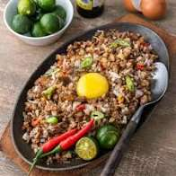
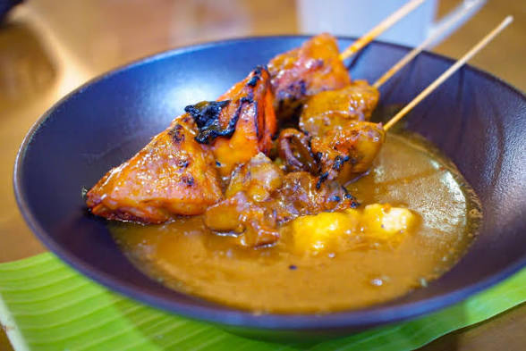

PORK ADOBO
Karne na niluto sa suka, toyo, bawang, at dahon ng laurel.

SISIG
Galing Pampanga; hiniwang taba at laman ng baboy.

BICOL EXPRESS
Baboy sa gata ng niyog at siling labuyo.
| PLACE |
FOOD |
|
|---|
|
PORK ADOBO Karne na niluto sa suka, toyo, bawang, at dahon ng laurel. |
 SISIG Galing Pampanga; hiniwang taba at laman ng baboy. |
BICOL EXPRESS Baboy sa gata ng niyog at siling labuyo. |
 LECHON DE CEBU Buong baboy na inihaw sa uling. |
 CHICKEN INASAL Galing Bacolod; manok na inihaw. |
 LA PAZ BATCHOY Galing Iloilo; mami na may baboy at chicharon. |
 TIYULA ITUM Nilagang baka na may sunog na niyog. |
 SATTI Karne na tinuhog at inihaw. |
 Curacha with Alavar Sauce Alimasag sa Zamboanga. |